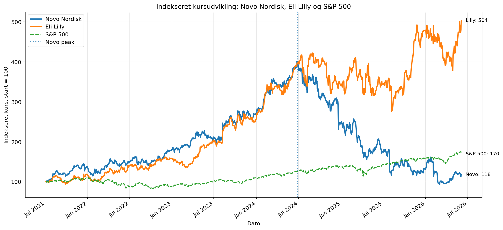
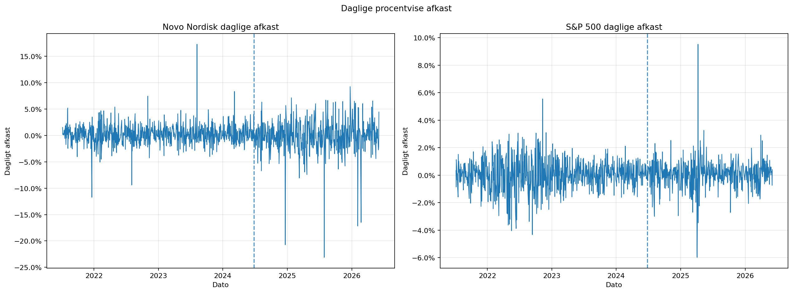
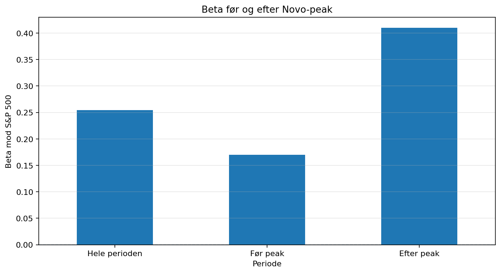
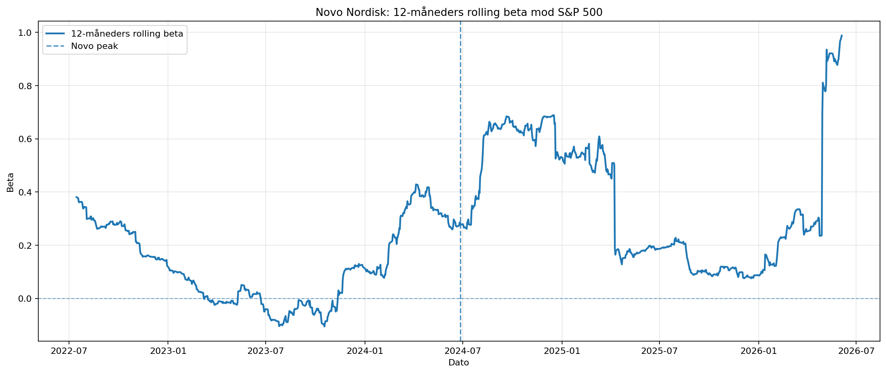
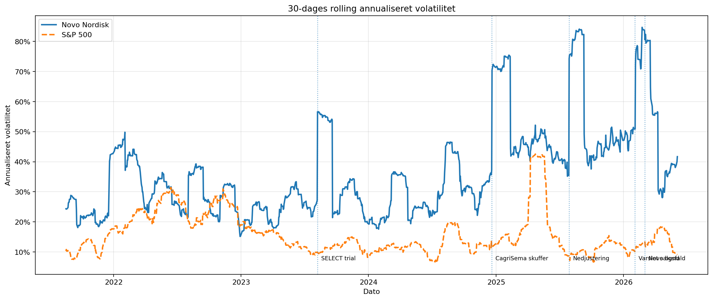
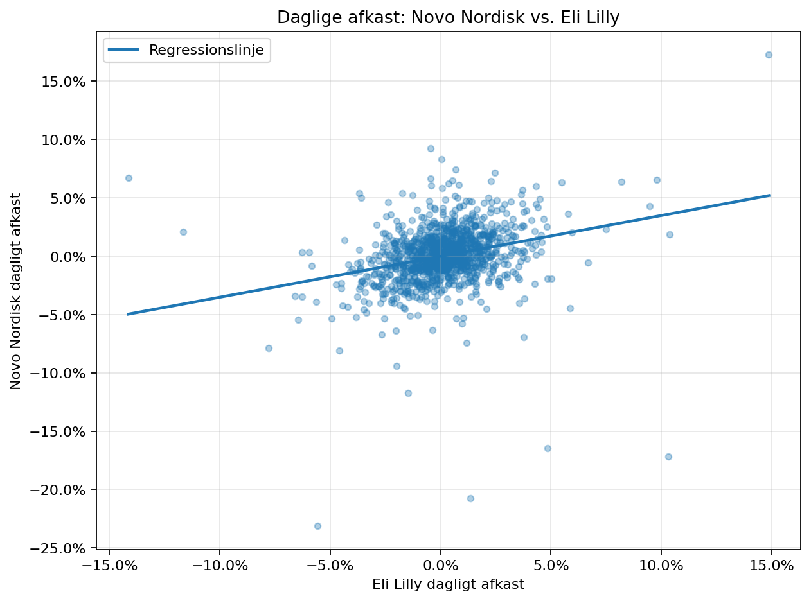
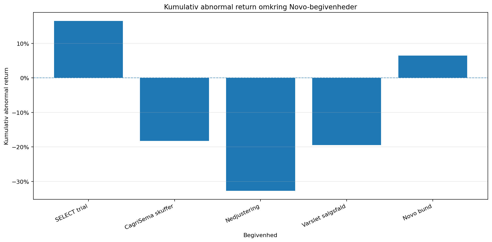
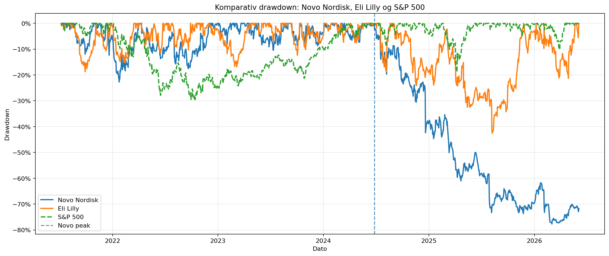

Lav markedsforklaringskraft
S&P 500 forklarer kun en begrænset del af Novo Nordisks daglige afkast. Hvis R² er lav, tyder det på, at aktien ikke kan forstås tilfredsstillende gennem markedsbevægelser alene.
Denne analyse undersøger, om Novo Nordisks kursudvikling de seneste fem år primært kan forklares af generelle markedsbevægelser, eller om udviklingen i højere grad er drevet af virksomhedsspecifikke begivenheder, strukturelle regimeskift og konkurrencen mod Eli Lilly på GLP-1-markedet.
Projektet starter med et simpelt spørgsmål, men udvider det til en mere robust kvantitativ undersøgelse.
Kan Novo Nordisk-aktien forklares af generelle markedsbevægelser, eller er det primært virksomhedsspecifikke og konkurrencemæssige forhold, der forklarer kursændringerne?
En traditionel beta mod markedet kan være misvisende, hvis perioden indeholder flere regimer. Novo Nordisk havde først en kraftig optur og derefter et markant kursfald. Derfor kombineres full-period regression med split-period regression, rolling beta, event study og sammenligning med Eli Lilly.
Hypoteserne gør analysen mere struktureret og viser tydeligt, hvad der testes.
S&P 500 forklarer kun en begrænset del af Novo Nordisks daglige afkast. Hvis R² er lav, tyder det på, at aktien ikke kan forstås tilfredsstillende gennem markedsbevægelser alene.
Novo's beta og R² ændrer sig før og efter aktiens peak i 2024. Det vil indikere, at én samlet regression over hele perioden skjuler forskellige markedsregimer.
Hvis Novo og Eli Lilly bevæger sig systematisk forskelligt, kan noget af Novo's kursudvikling forklares som konkurrencedynamik i GLP-1-markedet snarere end ren idiosynkratisk risiko.
Analysen bruger daglige justerede slutkurser fra Yahoo Finance og omsætter dem til afkastserier.
Novo Nordisk, S&P 500 og Eli Lilly hentes via yfinance. Kursserier indekseres til 100 for at sammenligne relativ performance.
Daglige afkast bruges til at estimere beta, alpha, R², p-værdi og standardfejl for Novo mod S&P 500.
Perioden deles ved Novo's peak i juni 2024, og beta/R² beregnes separat før og efter peak.
En 12-måneders rolling beta viser, om Novo's markedsfølsomhed ændrer sig over tid.
Abnormal returns beregnes omkring centrale Novo-begivenheder som faktisk afkast minus forventet afkast givet markedets bevægelse.
Nedenfor følger de vigtigste analysetrin, figurer og fortolkninger.
Første skridt er at sammenligne Novo Nordisk, Eli Lilly og S&P 500 på samme skala. Da aktierne handles i forskellige valutaer og på forskellige prisniveauer, indekseres alle serier til 100 ved første fælles handelsdag.
common_start = max(
pris_novo.dropna().index[0],
pris_sp500.dropna().index[0],
pris_elil.dropna().index[0]
)
idx_novo = (pris_novo / pris_novo.loc[common_start]) * 100
idx_sp500 = (pris_sp500 / pris_sp500.loc[common_start]) * 100
idx_elil = (pris_elil / pris_elil.loc[common_start]) * 100
fig, ax = plt.subplots(figsize=(13, 6))
ax.plot(idx_novo, linewidth=2.2, label="Novo Nordisk")
ax.plot(idx_elil, linewidth=2.2, label="Eli Lilly")
ax.plot(idx_sp500, linewidth=1.8, linestyle="--", label="S&P 500")
ax.axhline(100, linewidth=0.9, alpha=0.45)
ax.axvline(novo_peak_date, linestyle=":", linewidth=1.8, alpha=0.75, label="Novo peak")
ax.set_title("Indekseret kursudvikling: Novo Nordisk, Eli Lilly og S&P 500")
ax.set_xlabel("Dato")
ax.set_ylabel("Indekseret kurs, start = 100")
ax.grid(True, alpha=0.3)
ax.legend()
plt.tight_layout()
plt.savefig("assets/01_indekseret_kursudvikling.png", dpi=160, bbox_inches="tight")
plt.show()
assets/01_indekseret_kursudvikling.png for at vise den her.
Regressionen udføres på daglige afkast frem for priser. En lav R² betyder, at S&P 500 kun forklarer en lille del af variationen i Novo's afkast. Men full-period regressionen skal fortolkes forsigtigt, fordi perioden blander en kraftig optur med et kraftigt efterfølgende fald.
returns_novo = pris_novo.pct_change()
returns_sp500 = pris_sp500.pct_change()
returns_elil = pris_elil.pct_change()
aligned_3 = pd.concat(
[returns_novo, returns_sp500, returns_elil],
axis=1,
sort=False
).dropna()
aligned_3.columns = ["novo", "sp500", "elil"]
def run_regression(y, x):
regression_data = pd.concat([y, x], axis=1).dropna()
regression_data.columns = ["y", "x"]
beta, alpha, r_value, p_value, std_err = stats.linregress(
regression_data["x"],
regression_data["y"]
)
return {
"alpha": alpha,
"beta": beta,
"r_squared": r_value**2,
"p_value": p_value,
"std_error": std_err,
"n_obs": len(regression_data)
}
reg_full = run_regression(aligned_3["novo"], aligned_3["sp500"])
print(f"Beta: {reg_full['beta']:.4f}")
print(f"Alpha: {reg_full['alpha']:.6f}")
print(f"R²: {reg_full['r_squared']:.4f}")
print(f"P-værdi: {reg_full['p_value']:.6f}")
print(f"Std. error: {reg_full['std_error']:.6f}")
print(f"Obs.: {reg_full['n_obs']}")
assets/02_daglige_afkast.png for at vise den her.
For at undgå at gennemsnitliggøre to forskellige regimer deles analysen ved Novo's peak i juni 2024. Hvis beta og R² ændrer sig tydeligt før og efter peak, er det evidens for et strukturelt brud.
pre_peak = aligned_3.loc[aligned_3.index < novo_peak_date]
post_peak = aligned_3.loc[aligned_3.index >= novo_peak_date]
reg_pre = run_regression(pre_peak["novo"], pre_peak["sp500"])
reg_post = run_regression(post_peak["novo"], post_peak["sp500"])
split_regression_results = pd.DataFrame(
[reg_full, reg_pre, reg_post],
index=["Hele perioden", "Før peak", "Efter peak"]
)
print(split_regression_results)
fig, ax = plt.subplots(figsize=(9, 5))
split_regression_results["beta"].plot(kind="bar", ax=ax)
ax.axhline(0, linestyle="--", linewidth=1, alpha=0.7)
ax.set_title("Beta før og efter Novo-peak")
ax.set_xlabel("Periode")
ax.set_ylabel("Beta mod S&P 500")
ax.grid(True, axis="y", alpha=0.3)
plt.xticks(rotation=0)
plt.tight_layout()
plt.savefig("assets/03_split_period_beta.png", dpi=160, bbox_inches="tight")
plt.show()
assets/03_split_period_beta.png for at vise den her.
En rolling 12-måneders beta viser, om Novo's følsomhed over for markedet ændrer sig løbende. Rolling volatilitet viser samtidig, om risikoen i Novo stiger omkring centrale selskabsbegivenheder.
Volatilitetsfiguren er især vigtig, fordi Novo ikke bare har ét enkelt udsving. Der ses fire tydelige spikes i Novo-volatiliteten og en overordnet tendens til højere risiko gennem perioden. Det står i kontrast til S&P 500, hvor der primært ses én stor spike omkring Trumps “Liberation Day” den 2. april 2025, mens den generelle markedsvolatilitet ellers fremstår mere stabil eller svagt faldende.
rolling_window = 252
rolling_cov = aligned_3["novo"].rolling(rolling_window).cov(aligned_3["sp500"])
rolling_var = aligned_3["sp500"].rolling(rolling_window).var()
rolling_beta_12m = rolling_cov / rolling_var
fig, ax = plt.subplots(figsize=(14, 6))
ax.plot(rolling_beta_12m, linewidth=2, label="12-måneders rolling beta")
ax.axhline(0, linestyle="--", linewidth=1, alpha=0.6)
ax.axvline(novo_peak_date, linestyle="--", linewidth=1.5, alpha=0.8, label="Novo peak")
ax.set_title("Novo Nordisk: 12-måneders rolling beta mod S&P 500")
ax.set_xlabel("Dato")
ax.set_ylabel("Beta")
ax.grid(True, alpha=0.3)
ax.legend()
plt.tight_layout()
plt.savefig("assets/04_rolling_beta.png", dpi=160, bbox_inches="tight")
plt.show()
rolling_vol_novo_annual = aligned_3["novo"].rolling(window=30).std() * np.sqrt(252)
rolling_vol_sp500_annual = aligned_3["sp500"].rolling(window=30).std() * np.sqrt(252)
fig, ax = plt.subplots(figsize=(14, 6))
ax.plot(rolling_vol_novo_annual, linewidth=2, label="Novo Nordisk")
ax.plot(rolling_vol_sp500_annual, linewidth=2, linestyle="--", label="S&P 500")
ax.set_title("30-dages rolling annualiseret volatilitet")
ax.set_xlabel("Dato")
ax.set_ylabel("Annualiseret volatilitet")
ax.yaxis.set_major_formatter(mticker.PercentFormatter(1.0))
ax.grid(True, alpha=0.3)
ax.legend()
plt.tight_layout()
plt.savefig("assets/05_rolling_volatilitet.png", dpi=160, bbox_inches="tight")
plt.show()
assets/04_rolling_beta.png for at vise den her.

assets/05_rolling_volatilitet.png for at vise den her.
Eli Lilly er en central konkurrent i GLP-1-markedet. Derfor er det ikke nok at sammenligne Novo med S&P 500. En regression og korrelationsanalyse mellem Novo og Lilly kan vise, om investorernes forventninger flytter sig mellem de to selskaber.
novo_lilly_corr = aligned_3["novo"].corr(aligned_3["elil"])
reg_novo_lilly = run_regression(
y=aligned_3["novo"],
x=aligned_3["elil"]
)
print(f"Korrelation: {novo_lilly_corr:.4f}")
print(f"Beta mod Lilly: {reg_novo_lilly['beta']:.4f}")
print(f"R²: {reg_novo_lilly['r_squared']:.4f}")
print(f"P-værdi: {reg_novo_lilly['p_value']:.6f}")
fig, ax = plt.subplots(figsize=(8, 6))
ax.scatter(aligned_3["elil"], aligned_3["novo"], alpha=0.35, s=18)
x_vals = np.linspace(aligned_3["elil"].min(), aligned_3["elil"].max(), 100)
y_vals = reg_novo_lilly["alpha"] + reg_novo_lilly["beta"] * x_vals
ax.plot(x_vals, y_vals, linewidth=2, label="Regressionslinje")
ax.set_title("Daglige afkast: Novo Nordisk vs. Eli Lilly")
ax.set_xlabel("Eli Lilly dagligt afkast")
ax.set_ylabel("Novo Nordisk dagligt afkast")
ax.xaxis.set_major_formatter(mticker.PercentFormatter(1.0))
ax.yaxis.set_major_formatter(mticker.PercentFormatter(1.0))
ax.grid(True, alpha=0.3)
ax.legend()
plt.tight_layout()
plt.savefig("assets/06_novo_vs_lilly_regression.png", dpi=160, bbox_inches="tight")
plt.show()
assets/06_novo_vs_lilly_regression.png for at vise den her.
De vigtigste Novo-begivenheder analyseres med abnormal returns. Det gør analysen stærkere end kun at tegne lodrette linjer, fordi man måler, hvor meget Novo bevæger sig ud over det forventede givet markedets bevægelse.
def event_study(
returns_data,
event_dict,
estimation_window=252,
event_window_before=1,
event_window_after=3
):
results = []
for event_name, event_date_str in event_dict.items():
event_date = pd.to_datetime(event_date_str)
valid_dates = returns_data.index[returns_data.index >= event_date]
if len(valid_dates) == 0:
continue
trading_event_date = valid_dates[0]
event_pos = returns_data.index.get_loc(trading_event_date)
estimation_start_pos = event_pos - estimation_window - event_window_before
estimation_end_pos = event_pos - event_window_before
event_start_pos = event_pos - event_window_before
event_end_pos = event_pos + event_window_after
if estimation_start_pos < 0 or event_end_pos >= len(returns_data):
continue
estimation_data = returns_data.iloc[estimation_start_pos:estimation_end_pos]
event_data = returns_data.iloc[event_start_pos:event_end_pos + 1]
reg_event = run_regression(
y=estimation_data["novo"],
x=estimation_data["sp500"]
)
expected_return = reg_event["alpha"] + reg_event["beta"] * event_data["sp500"]
abnormal_return = event_data["novo"] - expected_return
results.append({
"event": event_name,
"dato": event_date.date(),
"handelsdato": trading_event_date.date(),
"beta_estimat": reg_event["beta"],
"faktisk_afkast_window": (1 + event_data["novo"]).prod() - 1,
"sp500_afkast_window": (1 + event_data["sp500"]).prod() - 1,
"abnormal_return_window": abnormal_return.sum(),
"event_window": f"[-{event_window_before}, +{event_window_after}]"
})
return pd.DataFrame(results)
event_results = event_study(
returns_data=aligned_3[["novo", "sp500"]],
event_dict=novo_events,
estimation_window=252,
event_window_before=1,
event_window_after=3
)
print(event_results)
fig, ax = plt.subplots(figsize=(12, 6))
ax.bar(
event_results["event"],
event_results["abnormal_return_window"]
)
ax.axhline(0, linestyle="--", linewidth=1, alpha=0.7)
ax.set_title("Kumulativ abnormal return omkring Novo-begivenheder")
ax.set_xlabel("Begivenhed")
ax.set_ylabel("Kumulativ abnormal return")
ax.yaxis.set_major_formatter(mticker.PercentFormatter(1.0))
ax.grid(True, axis="y", alpha=0.3)
plt.xticks(rotation=25, ha="right")
plt.tight_layout()
plt.savefig("assets/07_event_study_abnormal_returns.png", dpi=160, bbox_inches="tight")
plt.show()
assets/07_event_study_abnormal_returns.png for at vise den her.
Novo's maksimale drawdown bliver mere informativ, når den sammenlignes med både Eli Lilly og S&P 500. Det viser, om faldet er markedsbredt, sektorrelateret eller særligt Novo-specifikt.
def calculate_drawdown(return_series):
cumulative_return = (1 + return_series.dropna()).cumprod()
rolling_peak = cumulative_return.cummax()
drawdown = (cumulative_return - rolling_peak) / rolling_peak
return drawdown, drawdown.min()
drawdown_novo, max_dd_novo = calculate_drawdown(aligned_3["novo"])
drawdown_sp500, max_dd_sp500 = calculate_drawdown(aligned_3["sp500"])
drawdown_elil, max_dd_elil = calculate_drawdown(aligned_3["elil"])
drawdown_summary = pd.DataFrame({
"Max drawdown": [max_dd_novo, max_dd_elil, max_dd_sp500]
}, index=["Novo Nordisk", "Eli Lilly", "S&P 500"])
print(drawdown_summary)
fig, ax = plt.subplots(figsize=(14, 6))
ax.plot(drawdown_novo, linewidth=2, label="Novo Nordisk")
ax.plot(drawdown_elil, linewidth=2, label="Eli Lilly")
ax.plot(drawdown_sp500, linewidth=2, linestyle="--", label="S&P 500")
ax.axvline(novo_peak_date, linestyle="--", linewidth=1.5, alpha=0.8, label="Novo peak")
ax.set_title("Komparativ drawdown: Novo Nordisk, Eli Lilly og S&P 500")
ax.set_xlabel("Dato")
ax.set_ylabel("Drawdown")
ax.yaxis.set_major_formatter(mticker.PercentFormatter(1.0))
ax.grid(True, alpha=0.3)
ax.legend()
plt.tight_layout()
plt.savefig("assets/08_komparativ_drawdown.png", dpi=160, bbox_inches="tight")
plt.show()
split_regression_results.to_csv("assets/split_regression_results.csv")
event_results.to_csv("assets/event_study_results.csv", index=False)
drawdown_summary.to_csv("assets/drawdown_summary.csv")
assets/08_komparativ_drawdown.png for at vise den her.
Den endelige konklusion er mere nuanceret end en simpel beta-fortolkning.
Den oprindelige full-period beta giver kun et groft billede af Novo Nordisks markedsfølsomhed. Perioden indeholder både en kraftig optur frem til medio 2024 og et efterfølgende markant kursfald, hvilket gør én samlet lineær regression utilstrækkelig som selvstændigt argument.
Split-period regressionen og den rullende 12-måneders beta giver et mere robust billede af, om forholdet mellem Novo og markedet ændrer sig over tid. Hvis beta og R² er forskellige før og efter peak, peger det på et strukturelt brud.
Sammenligningen med Eli Lilly gør analysen mere præcis, fordi noget af Novo's risiko kan skyldes konkurrencedynamik i GLP-1-markedet snarere end enten generel markedsrisiko eller ren Novo-specifik risiko. Event study'en styrker analysen yderligere ved at måle abnormal returns omkring konkrete selskabsbegivenheder.
Den mest præcise konklusion er derfor, at Novo Nordisks kursudvikling bør forklares gennem en kombination af lav markedsforklaringskraft, strukturelle regimeskift, konkurrencerisiko relativt til Eli Lilly og store abnormal returns omkring Novo-specifikke begivenheder.
Hele analysen kan køres som ét Python-script eller opdeles i notebook-celler. Koden gemmer figurerne i assets/, som HTML-siden bruger til at vise graferne.
# ============================================================
# Novo Nordisk-analyse
# Kan aktien forklares af markedet, eller dominerer
# virksomhedsspecifikke og konkurrencemæssige forhold?
# ============================================================
import pandas as pd
import numpy as np
import matplotlib.pyplot as plt
import matplotlib.ticker as mticker
import matplotlib.dates as mdates
import yfinance as yf
from scipy import stats
from pathlib import Path
# Gemmer alle figurer i en mappe, som HTML-siden kan læse fra.
Path("assets").mkdir(exist_ok=True)
# ------------------------------------------------------------
# 1) Data og tickers
# ------------------------------------------------------------
# NOVO-B.CO handles i DKK, mens S&P 500 og Eli Lilly er USD-baserede.
# Afkast er dog skala-uafhængige, så pct_change() kan sammenlignes direkte.
# I kursgraferne indekseres serierne til 100 for at gøre udviklingen sammenlignelig.
novo = "NOVO-B.CO" # Novo Nordisk B-aktien på Yahoo Finance
sp500 = "^GSPC" # S&P 500
elil = "LLY" # Eli Lilly
START = "2021-07-06"
SLUT = pd.Timestamp.today().strftime("%Y-%m-%d")
novo_peak_date = pd.to_datetime("2024-06-26")
novo_events = {
"SELECT trial": "2023-08-08",
"CagriSema skuffer": "2024-12-20",
"Nedjustering": "2025-07-29",
"Varslet salgsfald": "2026-02-03",
"Novo bund": "2026-03-03"
}
sp500_events = {
"Liberation Day": "2025-04-02"
}
def hent_close(ticker):
"""Downloader justerede slutkurser og returnerer en ren Series."""
return yf.download(
ticker,
start=START,
end=SLUT,
auto_adjust=True,
progress=False
)["Close"].squeeze()
pris_novo = hent_close(novo)
pris_sp500 = hent_close(sp500)
pris_elil = hent_close(elil)
# ------------------------------------------------------------
# 2) Indekseret kursudvikling
# ------------------------------------------------------------
# Da serierne har forskellige valutaer og niveauer, sættes alle til 100
# ved første fælles handelsdag. Grafen viser derfor relativ performance.
common_start = max(
pris_novo.dropna().index[0],
pris_sp500.dropna().index[0],
pris_elil.dropna().index[0]
)
idx_novo = (pris_novo / pris_novo.loc[common_start]) * 100
idx_sp500 = (pris_sp500 / pris_sp500.loc[common_start]) * 100
idx_elil = (pris_elil / pris_elil.loc[common_start]) * 100
fig, ax = plt.subplots(figsize=(13, 6))
ax.plot(idx_novo, linewidth=2.2, label="Novo Nordisk")
ax.plot(idx_elil, linewidth=2.2, label="Eli Lilly")
ax.plot(idx_sp500, linewidth=1.8, linestyle="--", label="S&P 500")
ax.axhline(100, linewidth=0.9, alpha=0.45)
ax.axvline(novo_peak_date, linestyle=":", linewidth=1.8, alpha=0.75, label="Novo peak")
for series, name in [
(idx_novo, "Novo"),
(idx_elil, "Lilly"),
(idx_sp500, "S&P 500")
]:
last_val = series.dropna().iloc[-1]
last_date = series.dropna().index[-1]
ax.annotate(
f"{name}: {last_val:.0f}",
xy=(last_date, last_val),
xytext=(8, 0),
textcoords="offset points",
fontsize=9,
va="center"
)
ax.set_title("Indekseret kursudvikling: Novo Nordisk, Eli Lilly og S&P 500")
ax.set_xlabel("Dato")
ax.set_ylabel("Indekseret kurs, start = 100")
ax.xaxis.set_major_formatter(mdates.DateFormatter("%b %Y"))
ax.xaxis.set_major_locator(mdates.MonthLocator(bymonth=[1, 7]))
ax.grid(True, alpha=0.3)
ax.legend()
fig.autofmt_xdate(rotation=35)
plt.tight_layout()
plt.savefig("assets/01_indekseret_kursudvikling.png", dpi=160, bbox_inches="tight")
plt.show()
# ------------------------------------------------------------
# 3) Daglige afkast
# ------------------------------------------------------------
# Risiko og regression bør beregnes på afkast, ikke prisniveauer.
# Prisniveauer er typisk ikke-stationære, mens daglige afkast er mere egnede
# til beta, volatilitet, korrelation og event-analyse.
returns_novo = pris_novo.pct_change()
returns_sp500 = pris_sp500.pct_change()
returns_elil = pris_elil.pct_change()
aligned_3 = pd.concat(
[returns_novo, returns_sp500, returns_elil],
axis=1,
sort=False
).dropna()
aligned_3.columns = ["novo", "sp500", "elil"]
fig, axes = plt.subplots(1, 2, figsize=(16, 6))
axes[0].plot(aligned_3["novo"], linewidth=1)
axes[0].axvline(novo_peak_date, linestyle="--", linewidth=1.5, alpha=0.8)
axes[0].set_title("Novo Nordisk daglige afkast")
axes[0].set_xlabel("Dato")
axes[0].set_ylabel("Dagligt afkast")
axes[0].yaxis.set_major_formatter(mticker.PercentFormatter(1.0))
axes[0].grid(True, alpha=0.3)
axes[1].plot(aligned_3["sp500"], linewidth=1)
axes[1].axvline(novo_peak_date, linestyle="--", linewidth=1.5, alpha=0.8)
axes[1].set_title("S&P 500 daglige afkast")
axes[1].set_xlabel("Dato")
axes[1].set_ylabel("Dagligt afkast")
axes[1].yaxis.set_major_formatter(mticker.PercentFormatter(1.0))
axes[1].grid(True, alpha=0.3)
plt.suptitle("Daglige procentvise afkast")
plt.tight_layout()
plt.savefig("assets/02_daglige_afkast.png", dpi=160, bbox_inches="tight")
plt.show()
# ------------------------------------------------------------
# 4) Hjælpefunktion til regression
# ------------------------------------------------------------
# Modellen er:
# Novo-afkast = alpha + beta * markedsafkast
#
# Beta måler følsomheden over for markedet.
# R² måler hvor stor en del af variationen i Novo-afkast, som modellen forklarer.
def run_regression(y, x):
regression_data = pd.concat([y, x], axis=1).dropna()
regression_data.columns = ["y", "x"]
beta, alpha, r_value, p_value, std_err = stats.linregress(
regression_data["x"],
regression_data["y"]
)
return {
"alpha": alpha,
"beta": beta,
"r_squared": r_value**2,
"p_value": p_value,
"std_error": std_err,
"n_obs": len(regression_data)
}
# ------------------------------------------------------------
# 5) Full-period regression: Novo mod S&P 500
# ------------------------------------------------------------
# Denne regression er nyttig som udgangspunkt, men ikke nok alene,
# fordi perioden indeholder både en stærk optur og et stort fald.
reg_full = run_regression(aligned_3["novo"], aligned_3["sp500"])
print("── Full-period regression: Novo vs. S&P 500 ───────────────")
print(f"Beta: {reg_full['beta']:.4f}")
print(f"Alpha: {reg_full['alpha']:.6f}")
print(f"R²: {reg_full['r_squared']:.4f}")
print(f"P-værdi: {reg_full['p_value']:.6f}")
print(f"Std. error: {reg_full['std_error']:.6f}")
print(f"Obs.: {reg_full['n_obs']}")
# ------------------------------------------------------------
# 6) Split-period regression
# ------------------------------------------------------------
# Perioden deles ved Novo-peak. Hvis beta og R² ændrer sig væsentligt,
# peger det på et strukturelt brud i aktiens relation til markedet.
pre_peak = aligned_3.loc[aligned_3.index < novo_peak_date]
post_peak = aligned_3.loc[aligned_3.index >= novo_peak_date]
reg_pre = run_regression(pre_peak["novo"], pre_peak["sp500"])
reg_post = run_regression(post_peak["novo"], post_peak["sp500"])
split_regression_results = pd.DataFrame(
[reg_full, reg_pre, reg_post],
index=["Hele perioden", "Før peak", "Efter peak"]
)
print("\n── Split-period regression: Novo vs. S&P 500 ───────────────")
print(split_regression_results)
fig, ax = plt.subplots(figsize=(9, 5))
split_regression_results["beta"].plot(kind="bar", ax=ax)
ax.axhline(0, linestyle="--", linewidth=1, alpha=0.7)
ax.set_title("Beta før og efter Novo-peak")
ax.set_xlabel("Periode")
ax.set_ylabel("Beta mod S&P 500")
ax.grid(True, axis="y", alpha=0.3)
plt.xticks(rotation=0)
plt.tight_layout()
plt.savefig("assets/03_split_period_beta.png", dpi=160, bbox_inches="tight")
plt.show()
# ------------------------------------------------------------
# 7) Rolling 12-måneders beta
# ------------------------------------------------------------
# En enkelt beta skjuler regimeskift. Rolling beta viser, om Novo løbende
# bliver mere eller mindre følsom over for markedet.
rolling_window = 252
rolling_cov = aligned_3["novo"].rolling(rolling_window).cov(aligned_3["sp500"])
rolling_var = aligned_3["sp500"].rolling(rolling_window).var()
rolling_beta_12m = rolling_cov / rolling_var
fig, ax = plt.subplots(figsize=(14, 6))
ax.plot(rolling_beta_12m, linewidth=2, label="12-måneders rolling beta")
ax.axhline(0, linestyle="--", linewidth=1, alpha=0.6)
ax.axvline(novo_peak_date, linestyle="--", linewidth=1.5, alpha=0.8, label="Novo peak")
ax.set_title("Novo Nordisk: 12-måneders rolling beta mod S&P 500")
ax.set_xlabel("Dato")
ax.set_ylabel("Beta")
ax.grid(True, alpha=0.3)
ax.legend()
plt.tight_layout()
plt.savefig("assets/04_rolling_beta.png", dpi=160, bbox_inches="tight")
plt.show()
# ------------------------------------------------------------
# 8) Rolling 30-dages annualiseret volatilitet
# ------------------------------------------------------------
# Volatilitet viser, hvor kraftige udsvingene er. Her sammenlignes Novo og S&P 500.
rolling_vol_novo_annual = aligned_3["novo"].rolling(window=30).std() * np.sqrt(252)
rolling_vol_sp500_annual = aligned_3["sp500"].rolling(window=30).std() * np.sqrt(252)
fig, ax = plt.subplots(figsize=(14, 6))
ax.plot(rolling_vol_novo_annual, linewidth=2, label="Novo Nordisk")
ax.plot(rolling_vol_sp500_annual, linewidth=2, linestyle="--", label="S&P 500")
for label, date in novo_events.items():
event_date = pd.to_datetime(date)
ax.axvline(event_date, linestyle=":", linewidth=1.1, alpha=0.65)
ax.annotate(
label,
xy=(event_date, 0.05),
xycoords=("data", "axes fraction"),
xytext=(5, 0),
textcoords="offset points",
fontsize=8,
rotation=0,
va="bottom"
)
ax.set_title("30-dages rolling annualiseret volatilitet")
ax.set_xlabel("Dato")
ax.set_ylabel("Annualiseret volatilitet")
ax.yaxis.set_major_formatter(mticker.PercentFormatter(1.0))
ax.grid(True, alpha=0.3)
ax.legend()
plt.tight_layout()
plt.savefig("assets/05_rolling_volatilitet.png", dpi=160, bbox_inches="tight")
plt.show()
# ------------------------------------------------------------
# 9) Novo vs. Eli Lilly: korrelation og regression
# ------------------------------------------------------------
# Hvis Novo og Lilly bevæger sig modsat hinanden, er risikoen ikke blot
# Novo-specifik. Den kan også være konkurrencerisiko i GLP-1-markedet.
novo_lilly_corr = aligned_3["novo"].corr(aligned_3["elil"])
reg_novo_lilly = run_regression(
y=aligned_3["novo"],
x=aligned_3["elil"]
)
print("\n── Novo vs. Eli Lilly ─────────────────────────────────────")
print(f"Korrelation: {novo_lilly_corr:.4f}")
print(f"Beta mod Lilly: {reg_novo_lilly['beta']:.4f}")
print(f"Alpha: {reg_novo_lilly['alpha']:.6f}")
print(f"R²: {reg_novo_lilly['r_squared']:.4f}")
print(f"P-værdi: {reg_novo_lilly['p_value']:.6f}")
print(f"Std. error: {reg_novo_lilly['std_error']:.6f}")
print(f"Obs.: {reg_novo_lilly['n_obs']}")
fig, ax = plt.subplots(figsize=(8, 6))
ax.scatter(aligned_3["elil"], aligned_3["novo"], alpha=0.35, s=18)
x_vals = np.linspace(aligned_3["elil"].min(), aligned_3["elil"].max(), 100)
y_vals = reg_novo_lilly["alpha"] + reg_novo_lilly["beta"] * x_vals
ax.plot(x_vals, y_vals, linewidth=2, label="Regressionslinje")
ax.set_title("Daglige afkast: Novo Nordisk vs. Eli Lilly")
ax.set_xlabel("Eli Lilly dagligt afkast")
ax.set_ylabel("Novo Nordisk dagligt afkast")
ax.xaxis.set_major_formatter(mticker.PercentFormatter(1.0))
ax.yaxis.set_major_formatter(mticker.PercentFormatter(1.0))
ax.grid(True, alpha=0.3)
ax.legend()
plt.tight_layout()
plt.savefig("assets/06_novo_vs_lilly_regression.png", dpi=160, bbox_inches="tight")
plt.show()
# ------------------------------------------------------------
# 10) Event study med abnormal returns
# ------------------------------------------------------------
# For hver begivenhed estimeres normalafkastet ud fra Novo's relation
# til S&P 500 før begivenheden. Abnormal return er forskellen mellem
# faktisk Novo-afkast og forventet Novo-afkast.
#
# Event-vindue: [-1, +3] handelsdage omkring begivenheden.
# Estimeringsvindue: 252 handelsdage før event-vinduet.
def event_study(
returns_data,
event_dict,
estimation_window=252,
event_window_before=1,
event_window_after=3
):
results = []
for event_name, event_date_str in event_dict.items():
event_date = pd.to_datetime(event_date_str)
valid_dates = returns_data.index[returns_data.index >= event_date]
if len(valid_dates) == 0:
continue
trading_event_date = valid_dates[0]
event_pos = returns_data.index.get_loc(trading_event_date)
estimation_start_pos = event_pos - estimation_window - event_window_before
estimation_end_pos = event_pos - event_window_before
event_start_pos = event_pos - event_window_before
event_end_pos = event_pos + event_window_after
if estimation_start_pos < 0 or event_end_pos >= len(returns_data):
continue
estimation_data = returns_data.iloc[estimation_start_pos:estimation_end_pos]
event_data = returns_data.iloc[event_start_pos:event_end_pos + 1]
reg_event = run_regression(
y=estimation_data["novo"],
x=estimation_data["sp500"]
)
expected_return = reg_event["alpha"] + reg_event["beta"] * event_data["sp500"]
abnormal_return = event_data["novo"] - expected_return
cumulative_actual_return = (1 + event_data["novo"]).prod() - 1
cumulative_market_return = (1 + event_data["sp500"]).prod() - 1
cumulative_abnormal_return = abnormal_return.sum()
results.append({
"event": event_name,
"dato": event_date.date(),
"handelsdato": trading_event_date.date(),
"beta_estimat": reg_event["beta"],
"alpha_estimat": reg_event["alpha"],
"faktisk_afkast_window": cumulative_actual_return,
"sp500_afkast_window": cumulative_market_return,
"abnormal_return_window": cumulative_abnormal_return,
"event_window": f"[-{event_window_before}, +{event_window_after}]"
})
return pd.DataFrame(results)
event_results = event_study(
returns_data=aligned_3[["novo", "sp500"]],
event_dict=novo_events,
estimation_window=252,
event_window_before=1,
event_window_after=3
)
print("\n── Event study: abnormal returns ───────────────────────────")
print(event_results)
fig, ax = plt.subplots(figsize=(12, 6))
ax.bar(
event_results["event"],
event_results["abnormal_return_window"]
)
ax.axhline(0, linestyle="--", linewidth=1, alpha=0.7)
ax.set_title("Kumulativ abnormal return omkring Novo-begivenheder")
ax.set_xlabel("Begivenhed")
ax.set_ylabel("Kumulativ abnormal return")
ax.yaxis.set_major_formatter(mticker.PercentFormatter(1.0))
ax.grid(True, axis="y", alpha=0.3)
plt.xticks(rotation=25, ha="right")
plt.tight_layout()
plt.savefig("assets/07_event_study_abnormal_returns.png", dpi=160, bbox_inches="tight")
plt.show()
# ------------------------------------------------------------
# 11) Komparativ drawdown
# ------------------------------------------------------------
# Novo's drawdown bliver først rigtig meningsfuld, når den sammenlignes
# med både markedet og Eli Lilly.
def calculate_drawdown(return_series):
cumulative_return = (1 + return_series.dropna()).cumprod()
rolling_peak = cumulative_return.cummax()
drawdown = (cumulative_return - rolling_peak) / rolling_peak
return drawdown, drawdown.min()
drawdown_novo, max_dd_novo = calculate_drawdown(aligned_3["novo"])
drawdown_sp500, max_dd_sp500 = calculate_drawdown(aligned_3["sp500"])
drawdown_elil, max_dd_elil = calculate_drawdown(aligned_3["elil"])
drawdown_summary = pd.DataFrame({
"Max drawdown": [max_dd_novo, max_dd_elil, max_dd_sp500]
}, index=["Novo Nordisk", "Eli Lilly", "S&P 500"])
print("\n── Komparativ max drawdown ────────────────────────────────")
print(drawdown_summary)
fig, ax = plt.subplots(figsize=(14, 6))
ax.plot(drawdown_novo, linewidth=2, label="Novo Nordisk")
ax.plot(drawdown_elil, linewidth=2, label="Eli Lilly")
ax.plot(drawdown_sp500, linewidth=2, linestyle="--", label="S&P 500")
ax.axvline(novo_peak_date, linestyle="--", linewidth=1.5, alpha=0.8, label="Novo peak")
ax.set_title("Komparativ drawdown: Novo Nordisk, Eli Lilly og S&P 500")
ax.set_xlabel("Dato")
ax.set_ylabel("Drawdown")
ax.yaxis.set_major_formatter(mticker.PercentFormatter(1.0))
ax.grid(True, alpha=0.3)
ax.legend()
plt.tight_layout()
plt.savefig("assets/08_komparativ_drawdown.png", dpi=160, bbox_inches="tight")
plt.show()
# ------------------------------------------------------------
# 12) Eksport af centrale tabeller
# ------------------------------------------------------------
# Tabellerne gemmes som CSV, så de kan dokumenteres eller bruges videre.
split_regression_results.to_csv("assets/split_regression_results.csv")
event_results.to_csv("assets/event_study_results.csv", index=False)
drawdown_summary.to_csv("assets/drawdown_summary.csv")
print("\nFigurer og tabeller er gemt i assets/-mappen.")